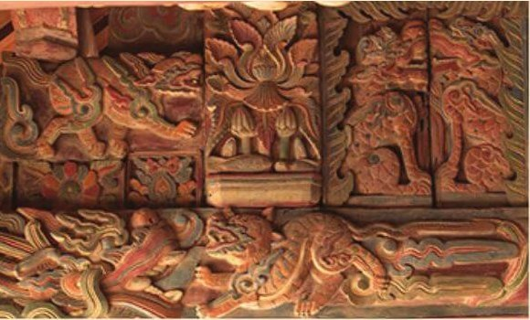
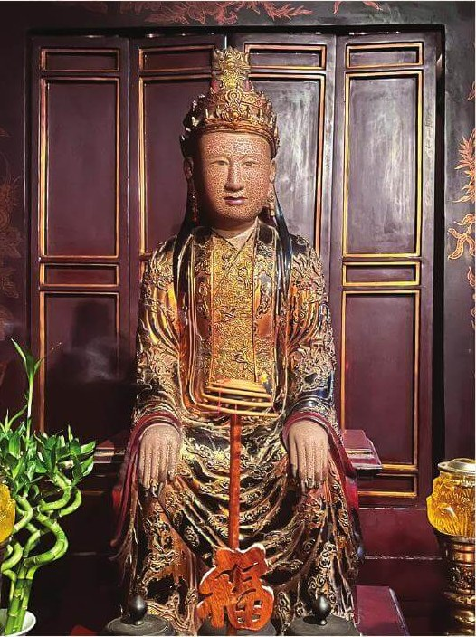

CỐ ĐÔ HOA LƯ
Temple du roi Lê

Le temple dédié au roi Lê Đại Hành a été initié dès le XVIIe siècle sur les fondations mêmes de l'ancien palais. Le temple adopte un style architectural "nội công ngoại quốc" (En forme de caractère « Công » à l'intérieur, de caractère « Quốc » à l'extérieur) en harmonie avec le temple du roi Đinh, et conserve par ailleurs dans leur intégralité de nombreux et remarquables panneaux sculptés datant de la période des Lê postérieurs (Hậu Lê).
Dès le porche du temple, les visiteurs pourront admirer l'apogée de l'art de la sculpture sur bois du XVIIe siècle. Les structures de soutien se distinguent par leurs motifs de lotus, de chrysanthèmes et de figures de dragons délicatement stylisés. En particulier, l'association du lotus noble avec l'image du tigre et de la touffe de bambous porte non seulement une profonde philosophie sur le karma, mais recèle également l'histoire sacrée de la légende de la naissance du roi Lê Hoàn.
De plus, six piliers du porche ont été habilement sculptés par les artisans en six corps de dragons s'étirant près de la poutre transversale, s'harmonisant avec les thèmes "Rencontre du Dragon et du Tigre", du dragon crachant du feu et tenant une perle, pour créer des œuvres sculptées en plein relief extrêmement vivantes.


En franchissant la porte pour pénétrer profondément dans la zone du sanctuaire intérieur conçu en forme de caractère « Công » comprenant trois salles, les visiteurs ressentiront progressivement et clairement la solennité et le talent des ancêtres :
La salle des Cérémonies (Bái đường) est le lieu de culte de la Communauté (Công đồng) : Elle impressionne fortement avec ses deux poutres en bois stylisées en forme de défenses d'éléphant – une technique magistrale qui joue à la fois un rôle porteur pour soutenir le toit et dissimule habilement les extrémités des poutres transversales dans l'architecture traditionnelle.
La salle de l'Encens (Thiêu hương) : Espace de commémoration des méritants de la dynastie des Lê antérieurs (Tiền Lê), qui se distingue par un système de tympans sculptés avec une extrême finesse de scènes animées de nids de dragons, de troupes de dragons, exprimant l'espoir de fertilité et de prospérité.
Le Palais principal (Chính cung) : Lieu où sont solennellement disposées les statues de culte du Roi Lê Đại Hành, de l'Impératrice Mère Dương Vân Nga et du Roi Khai Minh Lê Long Đĩnh.


Le Roi Lê Đại Hành (de son vrai nom Lê Hoàn), est né en 941 à Châu Ái (appartenant aujourd'hui à la province de Thanh Hóa). Ses parents sont décédés tôt, un fonctionnaire (quan sát) nommé Lê l'a adopté. À l'âge adulte, Lê Hoàn a aidé le Roi Nam Việt Đinh Liễn, le fils aîné du roi Đinh. Il a clairement montré qu'il était un homme de grande ambition, loué par Đinh Bộ Lĩnh comme un homme d'intelligence et de courage, et s'est vu confier le commandement des troupes. Lorsque le pays a connu la guerre civile des 12 seigneurs de guerre, Lê Hoàn a participé à la pacification, remportant de nombreux succès militaires. Une fois le pays unifié, Đinh Tiên Hoàng a conféré à Lê Hoàn le titre de Général des dix armées (Thập đạo tướng quân). En 980, la dynastie Đinh a pris fin, Lê Hoàn est monté sur le trône de l'Empereur, établissant la dynastie des Lê antérieurs (Tiền Lê), sous le nom d'ère Thiên Phúc.
Après son couronnement, le roi Lê Đại Hành a accompli deux exploits glorieux : la résistance contre les Song et la pacification du Champa (Chiêm Thành).
Le premier est l'exploit de la résistance contre les Song (en 981) : Sous le commandement direct et talentueux du roi, notre armée et notre peuple ont mis en œuvre une stratégie de guerre éclair, détruisant toutes les forces navales de l'ennemi à l'embouchure du fleuve Bạch Đằng, capturant vivants de nombreux généraux ennemis à Chi Lăng, forçant la dynastie Song à ordonner le retrait de ses troupes.
Le second est la campagne de pacification de l'armée du Champa (en 982) : c'est la première expédition vers le Sud dans l'histoire de la nation qui a remporté une victoire retentissante, affirmant fortement la souveraineté et le prestige de l'État de Đại Cồ Việt.
Non seulement stratège militaire hors pair, lorsque le pays était en paix, le roi Lê Đại Hành a également accordé une attention particulière à la consolidation des affaires intérieures. Il a fait frapper la monnaie "Thiên Phúc" pour développer le commerce, a développé les routes, l'irrigation au service de l'agriculture, et a perfectionné le système administratif des Lộ, Phủ jusqu'aux Châu. En 1005, le roi est décédé, laissant les fondations d'un État pacifique et prospère. Son fils Lê Long Đĩnh lui a succédé pendant 4 ans. En 1010, l'histoire a tourné une page lorsque la dynastie Lý a déplacé la capitale de Hoa Lư vers la citadelle de Thăng Long.
En venant dans cet espace sacré, nous ne pouvons manquer de mentionner l'Impératrice Mère Dương Vân Nga – l'une des femmes les plus courageuses et représentatives de l'histoire du Xe siècle.
Lorsque le roi Đinh Tiên Hoàng est décédé, le jeune roi Đinh Toàn est monté sur le trône à l'âge de 6 ans, l'ennemi Song menaçait d'envahir, le pays se trouvait dans une situation d'extrême urgence ("un millier de livres suspendues à un fil"). Face au destin de survie de la nation, mettant de côté tous les intérêts personnels et familiaux, l'Impératrice Mère a décidé de remettre la robe à col de dragon de la famille Đinh au Général des dix armées Lê Hoàn, le plaçant sur le trône pour diriger le navire de l'État à travers la guerre. Cette décision opportune, courageuse et visionnaire a créé une base juridique solide pour les victoires retentissantes de la résistance contre les Song et de la pacification du Champa.

Le temple dédié au roi Lê Đại Hành aujourd'hui n'est pas seulement le symbole du profond respect et de la gratitude des générations futures envers les empereurs passés, mais aussi un pont historique qui permet à chacun d'entre nous de toucher l'esprit héroïque de nos ancêtres dans l'ancienne capitale.